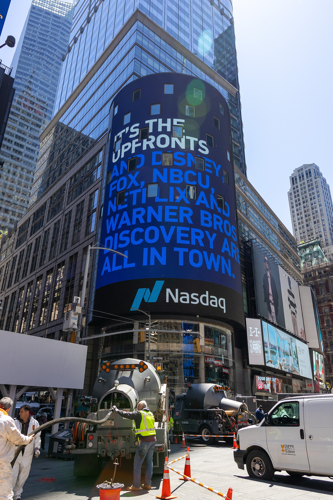
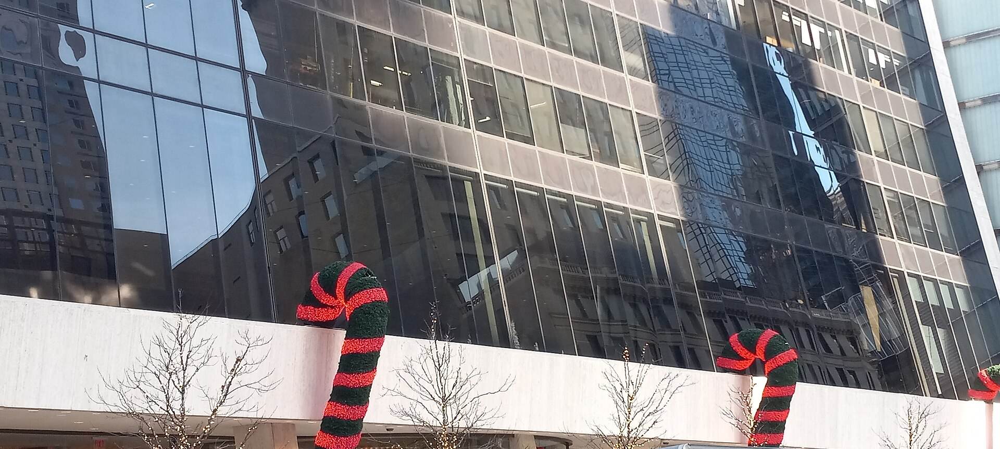

Vol. I · No. 177 · Saturday, November 21, 2026 · 12 items · 9.6 min read
An accounting question at Nvidia takes the Nasdaq down 5 percent and two indexes into correction; a Russian cruise missile lands in Poland; Anthropic’s offering closes at $119.5 billion; and Take-Two puts GTA VI’s first day at $3.79 billion.
Markets & Deals · New York
Nvidia falls 14 percent on a report that the SEC is examining its accounting, and the S&P 500 and the Dow close in correction
The New York Stock Exchange on Wall Street, where the Dow closed in correction on Friday. Mike Peel, CC BY-SA 4.0 / Wikimedia Commons
The Nasdaq Composite fell 5.28 percent on Friday, erasing its gain for the year in the second-largest one-day point drop on record, and the S&P 500 lost 3.7 percent as it and the Dow, down nearly 950 points, closed in , Fox Business reported. Nvidia fell 14 percent to $125.53 after Reuters reported that federal securities regulators are examining the company’s books.
It was a brutal day in the stock market with AI fears taking center stage.
Gerri Willis, Fox Business, Nov. 20
Two people briefed on the matter told Reuters that staff in the SEC’s are scrutinizing “potential accounting issues.” Reuters could not learn when the opened or which issues it covers, and the SEC declined to comment. Last year Nvidia began reporting revenue by where customers are headquartered rather than where they are billed, a change that removed from its breakdown; the Financial Times has reported sales there near half of global revenue. The shares were down more than 6 percent before the report.
Nvidia, run on an interim basis since stepped down as chief executive on Nov. 12, did not immediately respond. AMD fell 13.3 percent and Broadcom 12.1 percent, the Motley Fool reported. The S&P 500 posted a seventh straight loss, its longest run since February 2020, and the Nasdaq its worst week since March 2020, while the VIX closed at its highest since April 2025, Fox reported.
The World · Warsaw · cross-spectrum: CR
A Russian cruise missile comes down in southeastern Poland as allied troops drill nearby, and Tusk calls it an intentional provocation
Two suspected Russian missiles and a jet-powered drone fell in southeastern Poland overnight Thursday at Nowy Lipowiec, Rudnik nad Sanem and Molodycz, injuring no one, Defense Minister Władysław Kosiniak-Kamysz said, according to the Kyiv Independent. AFP reported that the object at Nowy Lipowiec was confirmed as a . “We are dealing with an intentional provocation,” Prime Minister Donald Tusk said, noting that drills with British and French troops were under way at Nowa Dęba, about 90 minutes’ drive away.
NATO secretary general Mark Rutte condemned “grave violations” and travels to Warsaw today. No outlet reported that Poland had requested consultations under . The same night Russia fired more than 110 missiles and 404 drones at Ukraine, killing eight people, Fox News reported, a day after the Shenzhen summit.
AI
The offering, closed
AI · San Francisco
Anthropic’s offering closes at $119.5 billion with the full overallotment and a $26 billion supplier placement, as the stock falls toward $83

The Nasdaq tower in Times Square. Anthropic trades on the Nasdaq Global Select Market as ANT. Nielsoncaetanosalmeron, CC BY 4.0 / Wikimedia Commons
Anthropic said on Friday that its initial public offering had closed with underwriters fully exercising their , for 1.127 billion Class A shares at $83 and gross proceeds of about $93.5 billion, $91.6 billion of it to the company. A concurrent of 313,253,007 Class N shares at the same price raised about $26 billion from AMD, Broadcom, Google, Micron, Microsoft, Nvidia and TSMC Partners, lifting the total to about $119.5 billion. The stock closed Friday at $88.91, down 8.5 percent, Fox Business reported, after touching $83.05, FinanceFeeds reported.
Markets & Deals
Funding compute off the books
Markets & Deals · New York
Apollo and Goldman price about $44 billion of notes to buy Nvidia chips for SpaceX, the largest GPU financing yet

The Solow Building in Midtown Manhattan, where Apollo has its headquarters. Kidfly182, CC BY 4.0 / Wikimedia Commons
Apollo and Goldman Sachs on Friday priced about $44 billion of senior and subordinated notes to buy Nvidia Vera Rubin chips and related equipment for SpaceX’s ground-based computing, calling the deal oversubscribed, upsized and the largest GPU financing to date. The structure is asset-based: begin when the chips arrive in the first half of 2027. Funds managed by BlackRock and Goldman Sachs Asset Management and accounts advised by KKR anchored the book.
Reuters reported three tranches: $25.17 billion of senior A3 notes due 2033 at 8.259 percent, about $4.4 billion of A2 notes due 2031 at 7.66 percent and $2.564 billion of at 8.36 percent, about $32 billion of the total. Latham & Watkins advised Apollo and Paul, Weiss the investors. Lenders want assurance the chips stay on Earth, the Financial Times reported, according to Gizmodo.
Markets & Deals · Washington
Treasuries rally on the stock rout, with the two-year down 13 basis points, as the Fed’s Cook argues for a hike
The two-year Treasury yield fell 13 basis points on Friday to 4.63 percent, the 10-year 12 to 4.92 percent and the 30-year 9 to 5.31 percent, Treasury’s par curve shows, with the 20-year at 5.34 percent still above the 30-year. Germany’s 10-year yield had its largest one-day drop since April, Investing.com reported. In Santiago, Fed governor said, “Waiting longer to implement rate increases risks getting behind the curve.” put the odds of a quarter-point hike on Dec. 9 at 97.5 percent, Yahoo Finance reported.
Markets & Deals · Austin, Texas
CrowdStrike is in talks to buy Zscaler, which would be the largest cybersecurity takeover on record
CrowdStrike is in talks to acquire , Bloomberg reported on Friday, and a deal could come together soon. Zscaler has a market value of about $32 billion to $33.5 billion, by Bloomberg’s and Reuters’ counts, against about $233 billion for CrowdStrike. Zscaler rose 17 percent after hours and CrowdStrike fell about 8 percent, Reuters reported, citing two sources who said “no deal is guaranteed.” Neither company commented, and no advisers have been named. The deal would fill CrowdStrike’s gap in network security against , Reuters reported.
Law & the Courts
Who counts as present
Law & the Courts · New Orleans
The full Fifth Circuit rules 9 to 8 that the House’s pandemic proxy votes broke the Quorum Clause, voiding a law as applied to Texas
The John Minor Wisdom U.S. Court of Appeals Building in New Orleans, seat of the Fifth Circuit. ajay_suresh, CC BY 4.0 / Wikimedia Commons
The en banc Fifth Circuit held on Friday, 9 to 8, that members voting by proxy cannot count toward a House quorum, so the passage of the 2023 omnibus spending law, which carried the Pregnant Workers Fairness Act, was unconstitutional. Judge Cory Wilson wrote for the majority in Texas v. Blanche, No. 24-10386, affirming a 2024 injunction by Judge James Wesley Hendrix that bars enforcement of the act against Texas alone. “Members of Congress must be present for quorum purposes,” Wilson wrote.
The majority held that the did not bar review. Judge James Graves, for seven dissenters, wrote that “the plain text of the contains no physical presence requirement,” and Judge Catharina Haynes dissented separately. A three-judge panel had upheld the law, Bloomberg Law reported.
Law & the Courts · Washington
The Justice Department tells its lawyers to stop citing the American Bar Association in court filings
Acting Deputy Attorney General Trent McCotter told department lawyers in a memo on Thursday to “exercise extreme caution when referencing ABA materials” and to “generally avoid citing such materials” in court filings and public documents, Bloomberg Law reported on Friday. Reliance on the association “risks legitimizing the ABA and its positions,” the memo said, citing its diversity policy and a court filing. The ABA has sued the administration for records about its deals with law firms, Raw Story reported. The memo limits citation, not compliance: under , department lawyers remain bound by state ethics codes built on the ABA’s .
Law & the Courts · Miami · South Florida
The Ninth Circuit pauses Essayli’s disqualification as the department sends him to Miami to lead the Mar-a-Lago probe
The Ninth Circuit on Friday granted an interim stay of Judge J. Michael Seabright’s October order finding that Bill Essayli was unlawfully serving as de facto U.S. attorney in Los Angeles, Bloomberg Law reported. The order barred him from two prosecutions and was to take effect Nov. 23. The department has assigned Essayli to the Southern District of Florida as a to lead the stalled inquiry into people involved in the 2022 Mar-a-Lago search, Bloomberg Law reported. Joe diGenova, its prior head, resigned in September, and the Miami U.S. attorney, Jason Reding Quiñones, stepped down on Nov. 6. No one has been charged.
The World
A climate text without oil
The World · Antalya, Türkiye · cross-spectrum: LC
COP31 talks run into Saturday after a draft deal drops every mention of fossil fuels
The old town marina in Antalya, host of COP31. REHBER0770, CC BY-SA 4.0 / Wikimedia Commons
The United Nations climate talks in Antalya missed their Friday close and pushed into Saturday, with a new draft expected during the day, Euronews reported. A second draft released Thursday removed all mention of coal, oil and gas, which the first had addressed, and instead sets how much carbon dioxide industry might capture each year by 2035, Ireland’s RTÉ reported. A $120 billion adaptation finance target was cut, AFP reported.
France and Panama, with a bloc of nine other countries, demanded “a clear transition away from fossil fuels,” and the European Union said the text risked “turning this climate COP into a fossil summit.” Panama’s environment minister, Juan Carlos Navarro, blamed a “petroleum mafia” and has threatened to object, which under the can block a deal. Saudi Arabia and the Arab Group oppose even acknowledging national roadmaps, RTÉ reported. “We are close to the finish line, but we are not there yet,” said , the conference president. The United States sent no delegation for a second year, Al Jazeera reported.
Entertainment & EASL
Vice City’s official count
Entertainment & EASL · New York · South Florida
Take-Two puts GTA VI’s first day at $3.79 billion in retail sales, more than its guidance for the whole quarter
Rockstar North’s studio in Edinburgh, which led development of GTA VI, set in a Miami called Vice City. Chabe01, CC BY-SA 4.0 / Wikimedia Commons
Take-Two Interactive said on Friday that Grand Theft Auto VI generated $3.79 billion in retail sales on its first day, a company estimate through Nov. 19 that it filed with the SEC, after 32.5 million units sold before release. On Nov. 9 it guided December-quarter to $3.35 billion to $3.5 billion, the Motley Fool reported, below the one-day figure. The total is well above ’s estimate. “We are incredibly humbled by the response from players around the world,” said Sam Houser, Rockstar’s founder.
Entertainment & EASL · Trenton, N.J. · South Florida
LIV Golf’s creditors subpoena the PGA Tour for its Saudi framework papers, and the Tour calls it a fishing expedition
The in LIV Golf’s Chapter 11 case served a subpoena on the PGA Tour on Friday seeking 18 categories of documents by Dec. 4, Front Office Sports reported. They include its records from the LIV antitrust suit, player discipline, the DOJ review and the June 6, 2023 with Saudi Arabia’s wealth fund. A Tour spokesperson called it “a desperate fishing expedition.” Objections go to Judge Michael Kaplan, and the next hearing is Nov. 24.
Compiled by Matthew Yellin · mattyellin.com · Est. May 2026 · A cross-spectrum brief drawn each morning from wires, filings, and the trade press